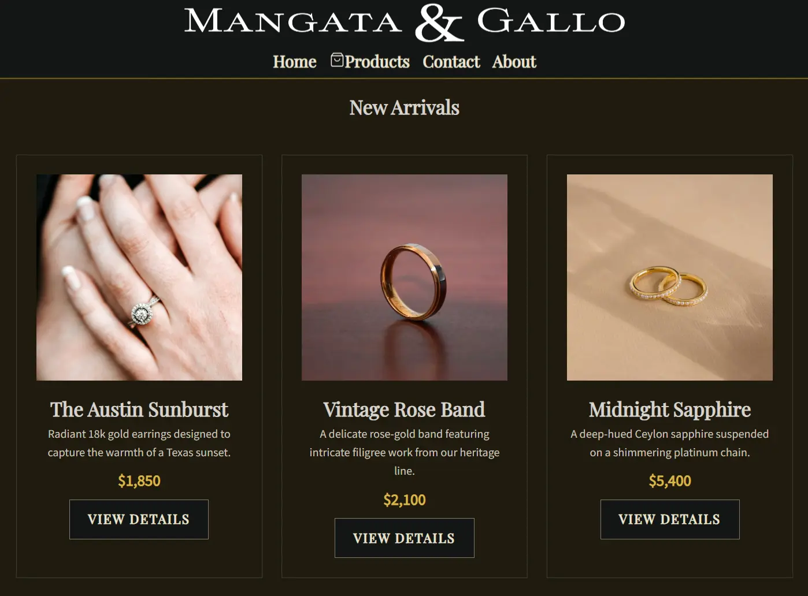
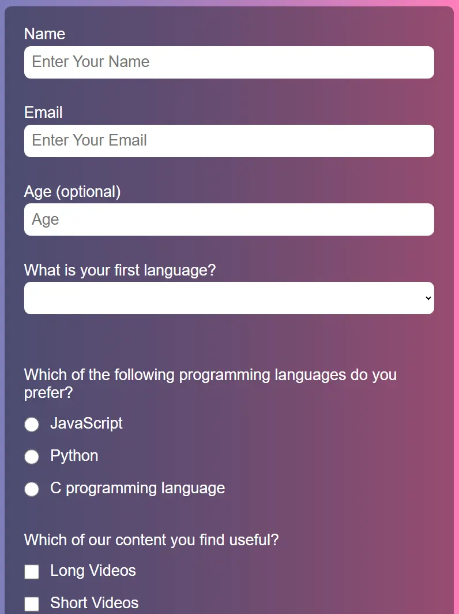
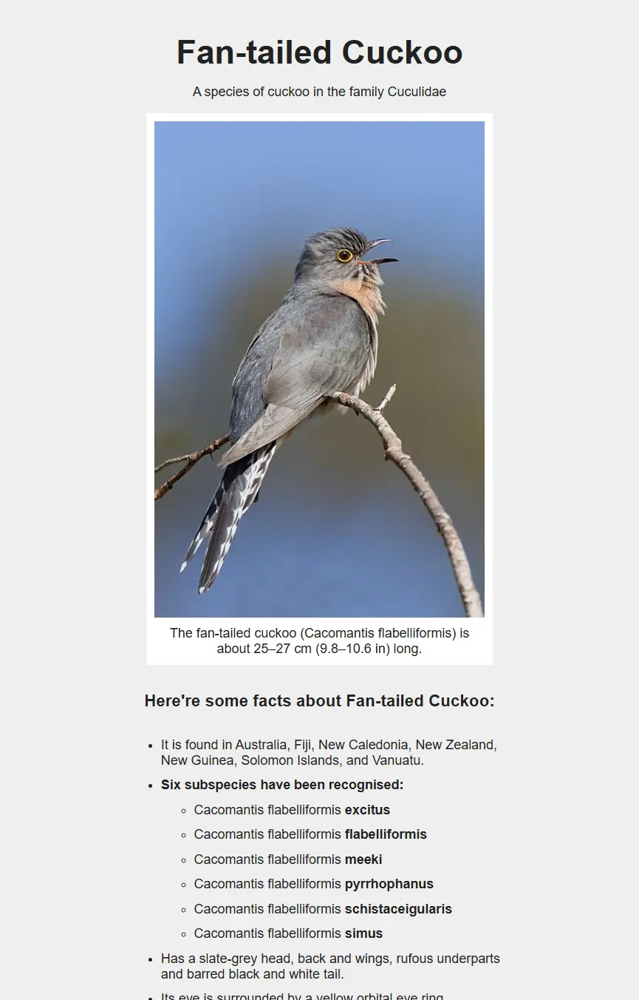
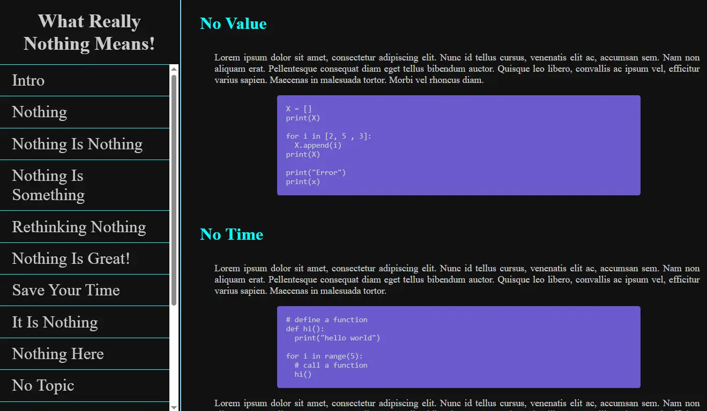
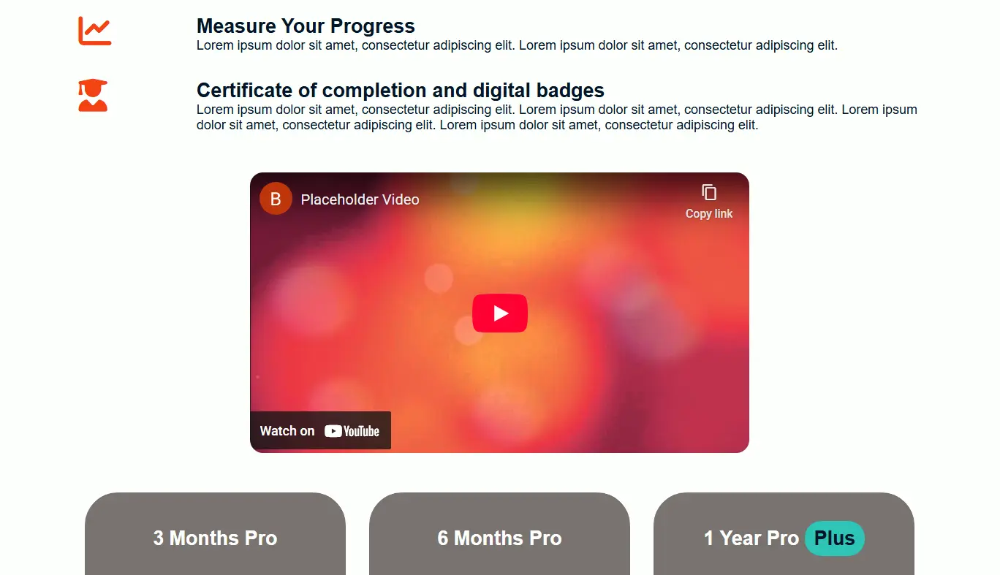

Mafdi Bissada
Web Developer | Analytical Problem Solver | Bridging Web Interfaces with Geospatial Data
A collection of responsive web designs

Survey Form Mockup

Tribute Page (Fan-tailed Cuckoo)

Technical Documentation Page
